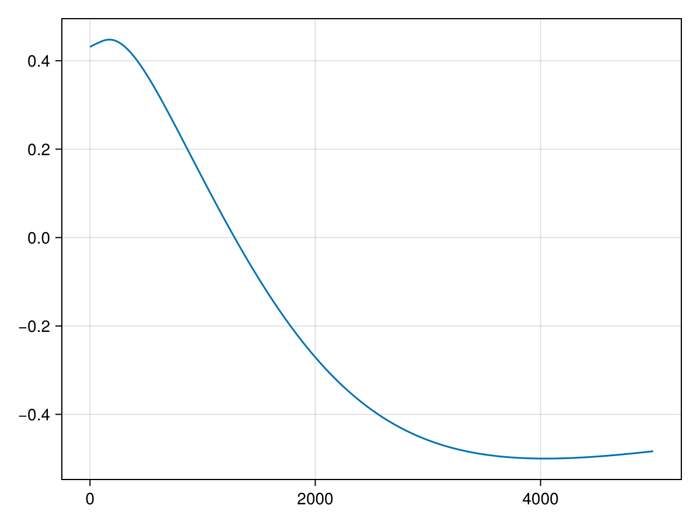
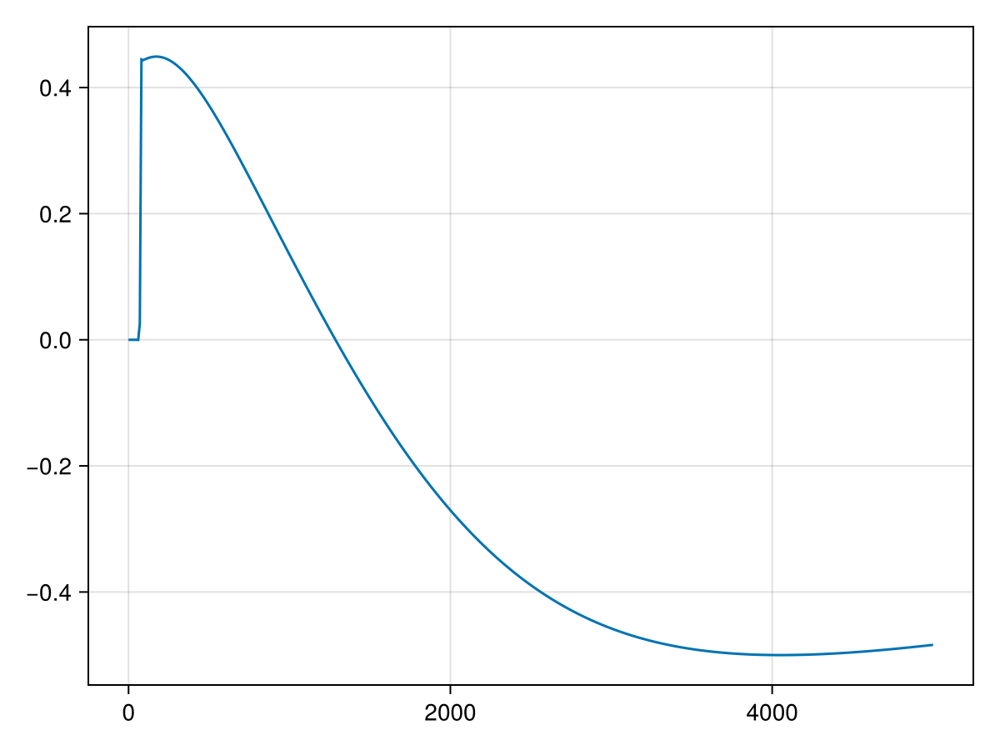
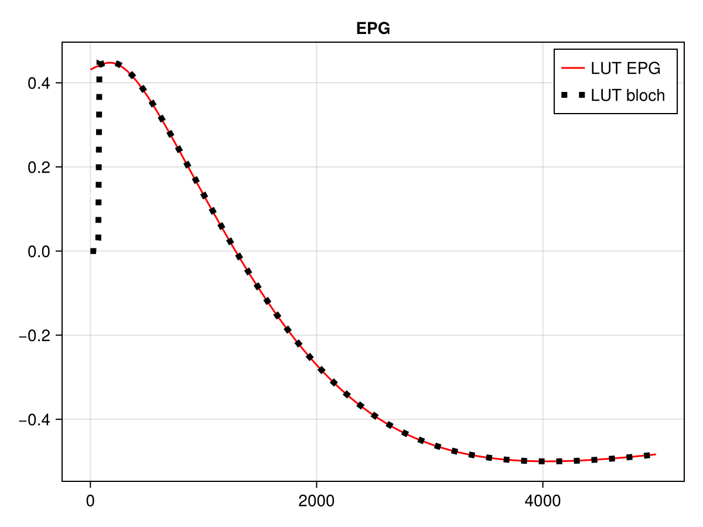

MP2RAGE LookUpTable
Introduction
The MP2RAGE sequence has been published by Marques et al and is used to generate a T1 map from two images acquired at two different inversion time points.
First the images are combined with the following equation : $\mathrm{UNI} = \operatorname{Re}\!\left(\frac{S_1\,\overline{S_2}}{|S_1|^2 + |S_2|^2}\right)$
Then the value are compared to a lookuptable (LUT) which can be calculated using the bloch equations.
Definition of MP2RAGE acquisition parameters
- TI1 = 800 # ms
- TI2 = 2200 # ms
- TR = 7 # ms
- MP2RAGE_TR = 5000 # ms
- ETL = 128
- a1 = 4 # flip angle of first readout train
- a2 = 7 # flip angle of first readout train
we will store them in a struct :
struct ParamsMP2RAGE
TI1::Float64
TI2::Float64
TR::Float64
MP2RAGE_TR::Float64
ETL::Int
a1::Float64
a2::Float64
end
p = ParamsMP2RAGE(
800, # ms - TI1
2200, # ms - TI2
7, # ms - TR
5000, # ms - MP2RAGE_TR
128, # ETL
4, # degree - flip angle of first readout train
7 # degree - flip angle of first readout train
)Main.ParamsMP2RAGE(800.0, 2200.0, 7.0, 5000.0, 128, 4.0, 7.0)Generate the LUT with EPG
using EPGsim
using CairoMakie
function mp2rage_lookuptable_epg(p::ParamsMP2RAGE;T1Range=1:1:10000,effInv = 1.00, rf_spoiling_inc = 117.0, Spoiler = 10, N_SS = 1, T2 = 100.0, TE = 3.0
)
TI1 =p.TI1
TI2 =p.TI2
TR = p.TR
MP2RAGE_TR = p.MP2RAGE_TR
ETL = p.ETL
a1 = p.a1
a2 = p.a2
## Calcul inner delays
dTI1 = TI1 - (ETL/2-1)*TR
dTI2 = TI2 - TI1 - ETL*TR
dTR = MP2RAGE_TR - (TI2 + (ETL/2)*TR)
## initial empty vector that will store the value
M_TI1 = []
M_TI2 = []
for T1 in T1Range # compute the value of the UNI signal for each T1 value
E = EPGStates(0,0,1) # initialize the signal with all the magnetization along the Z axis
for MP2_TR = 1:N_SS # Dummy scans loop
rf_1_phase = 0.0
rf_1_inc = 0.0
epgRotation!(E,deg2rad(180.0*effInv),deg2rad(0.0)) # Inversion pulse : first arguement is the flip angle and second is the RF phase.
epgDephasing!(E,10) # spoiling
epgRelaxation!(E,dTI1,T1,T2) #relaxation between each inversion pulse and the beginning of the first echo train
for i in 1:ETL
# RF phase increment
rf_phase = copy(rf_1_phase)
rf_1_inc = mod(rf_1_inc + rf_spoiling_inc,360.0)
rf_1_phase = mod(rf_1_phase + rf_1_inc,360.0)
epgRotation!(E,deg2rad(a1),deg2rad(rf_phase)) # excitation
epgRelaxation!(E,TE,T1,T2) # relaxation to TE
if i == ETL/2 && MP2_TR == N_SS
push!(M_TI1,epgSignal(E,deg2rad(rf_phase))) # cancel phase generated by rf_spoiling
end
epgRelaxation!(E,TR-TE,T1,T2) # relaxation after TE
epgDephasing!(E,Spoiler) # Spoiler
end
epgRelaxation!(E,dTI2,T1,T2)
for i in 1:ETL
rf_phase = copy(rf_1_phase)
rf_1_inc = mod(rf_1_inc + rf_spoiling_inc,360.0)
rf_1_phase = mod(rf_1_phase + rf_1_inc,360.0)
epgRotation!(E,deg2rad(a2),deg2rad(rf_phase))
epgRelaxation!(E,TE,T1,T2)
if i == ETL/2 && MP2_TR == N_SS
push!(M_TI2, epgSignal(E,deg2rad(rf_phase))) # cancel phase generated by rf_spoiling
end
epgRelaxation!(E,TR-TE,T1,T2)
epgDephasing!(E,Spoiler)
end
epgRelaxation!(E,dTR,T1,T2)
end
end
LUT_UNI = real.(M_TI1.*conj.(M_TI2)) ./ (abs.(M_TI1).^2 .+ abs.(M_TI2).^2) # UNI combinaison
return LUT_UNI, T1Range, M_TI1, M_TI2
end
T1Range = 0:10:5000
LUT_EPG, _ = mp2rage_lookuptable_epg(p::ParamsMP2RAGE;T1Range=T1Range,effInv = 1.00, rf_spoiling_inc = 117.0, Spoiler = 10, N_SS = 4, T2 = 100.0, TE = 3.0
)
lines(T1Range,LUT_EPG)
Build the Lookuptable with the bloch simulation
The original paper use a solution based on bloch equation and finding the steady-state signal
Warning: the Bloch-based LUT can show instabilities at the beginning of the T1 range, where the denominator becomes small and the ratio is sensitive to numerical error. Use care when interpreting low-T1 values and consider masking or regularizing this region.
function mp2rage_lookuptable_cartesian(p::ParamsMP2RAGE;T1Range=1:0.5:10000,effInv = 0.96)
TI1 =p.TI1
TI2 =p.TI2
TR = p.TR
MP2RAGE_TR = p.MP2RAGE_TR
n = p.ETL
α₁ = p.a1
α₂ = p.a2
# compute exponential decay
E1=vec(exp.(-TR./T1Range))
EA=vec(exp.(-(TI1-(n./2-1).*TR)./T1Range))
EB=vec(exp.(-(TI2-TI1-n.*TR)./T1Range))
EC=vec(exp.(-(MP2RAGE_TR.-(TI2+(n./2).*TR))./T1Range))
# compute mzss =[(B).*(cosd(α₂).*E1).^n+A].*EC+(1-EC);
B = ((1 .- EA).*(cosd(α₁).*E1).^n + (1 .- E1).*(1 .- (cosd(α₁).*E1).^n)./(1 .- cosd(α₁).*E1)).*EB+(1 .- EB)
A = (1 .- E1).*((1 .- (cosd(α₂).*E1).^n)./(1 .- cosd(α₂).*E1))
mzss_num=((B).*(cosd(α₂).*E1).^n+A).*EC+(1 .-EC)
mzss_denom=(1 .+ effInv.*(cosd(α₁).*cosd(α₂)).^n .* exp.(-MP2RAGE_TR./T1Range))
mzss=mzss_num./mzss_denom
# compute GRE1= sind(α₁).*(A.*(cosd(α₁).*E1).^(n./2-1)+B)
A=-effInv.*mzss.*EA+(1 .- EA)
B=(1 .- E1).*(1 .- (cosd(α₁).*E1).^(n./2-1))./(1 .- cosd(α₁).*E1)
GRE1=sind(α₁).*(A.*(cosd(α₁).*E1).^(n./2-1)+B)
# compute GRE2= sind(α₂).*(A-B)
A=(mzss-(1 .- EC))./(EC.*(cosd(α₂).*E1).^(n./2))
B=(1 .- E1).*((cosd(α₂).*E1).^(-n./2) .- 1)./(1 .- cosd(α₂).*E1)
GRE2=sind(α₂).*(A-B)
lookUpTable=GRE2.*GRE1./(GRE1.*GRE1+GRE2.*GRE2)
lookUpTable[isnan.(lookUpTable)].= 0
return lookUpTable, T1Range, GRE1, GRE2
end
LUT_bloch, _ = mp2rage_lookuptable_cartesian(p::ParamsMP2RAGE;T1Range=T1Range,effInv = 1.0)
lines(T1Range, LUT_bloch)
Comparison
begin
f=Figure()
ax=Axis(f[1,1],title = "EPG")
lines!(ax,T1Range,LUT_EPG,color=:red,label="LUT EPG")
lines!(ax,T1Range,LUT_bloch,color = :black,linewidth=5,linestyle =:dot,label = "LUT bloch ")
axislegend()
f
end